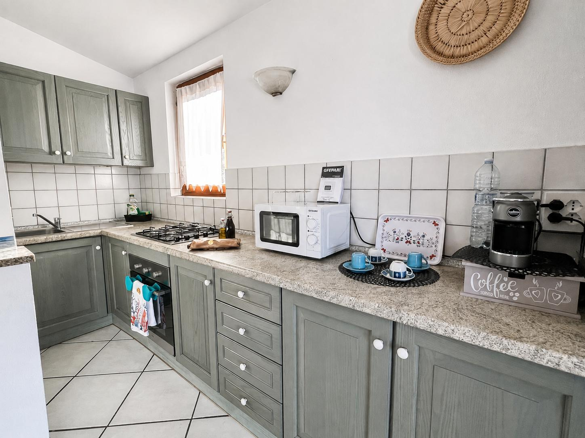
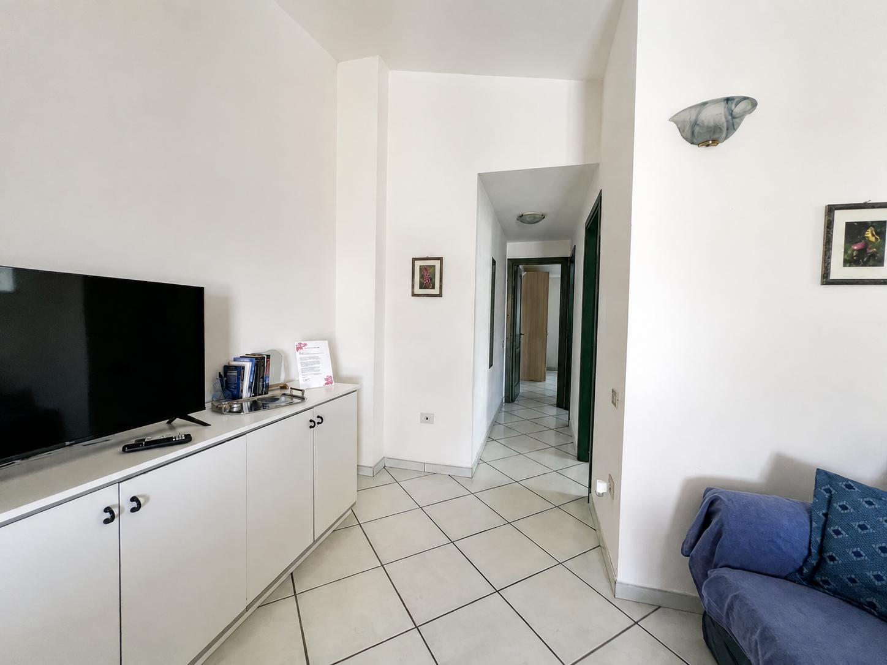
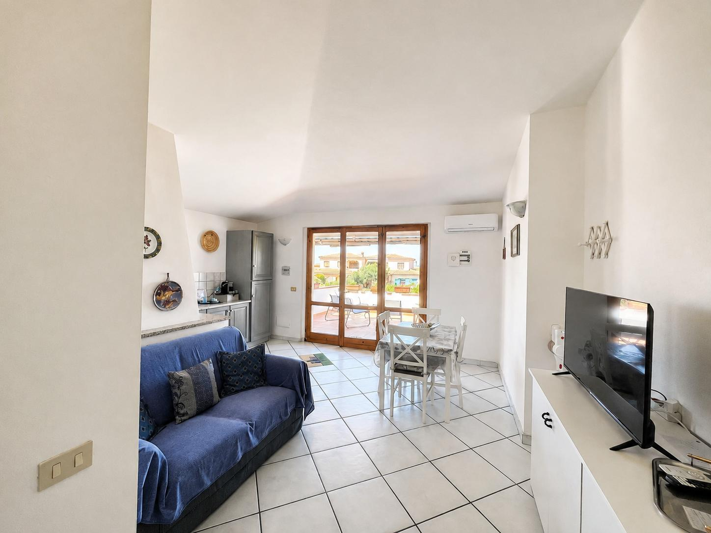
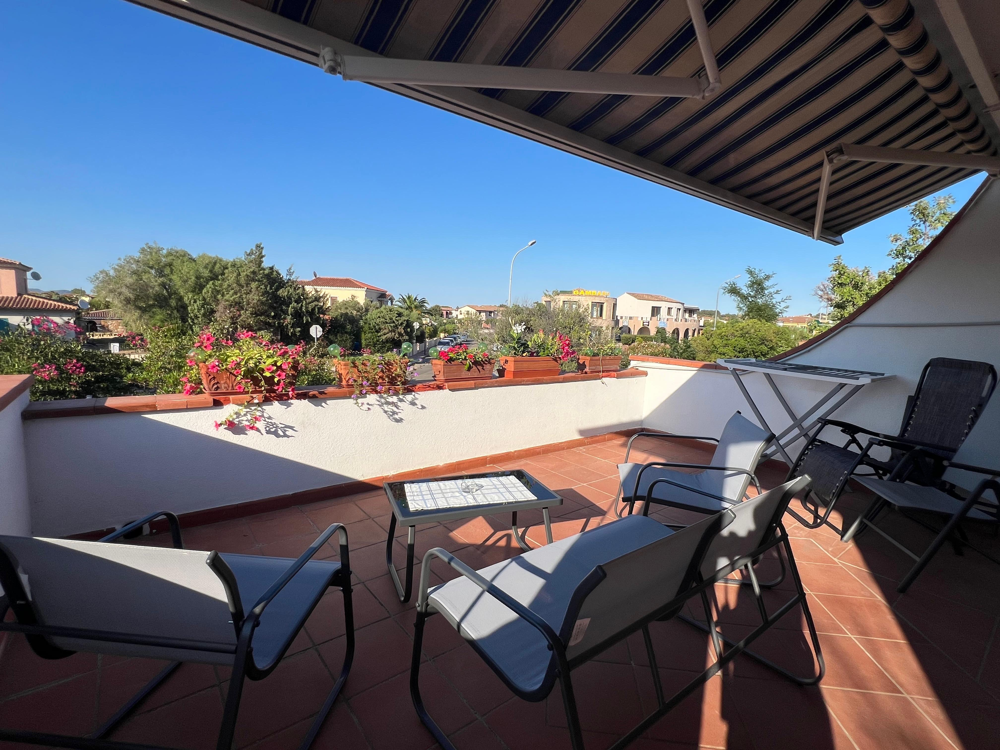
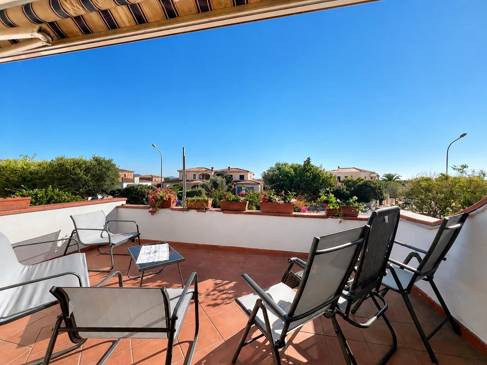
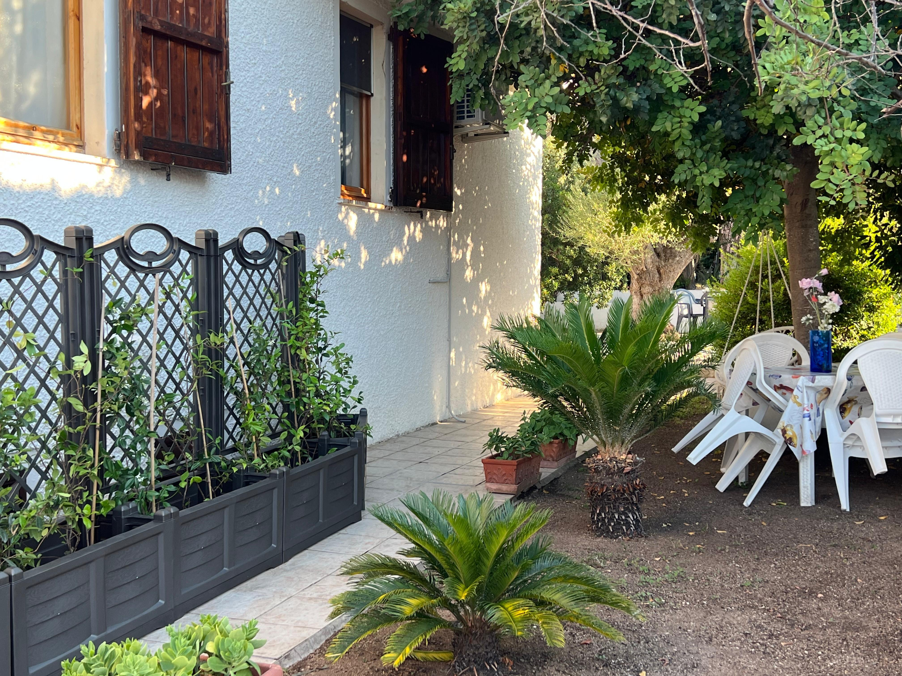
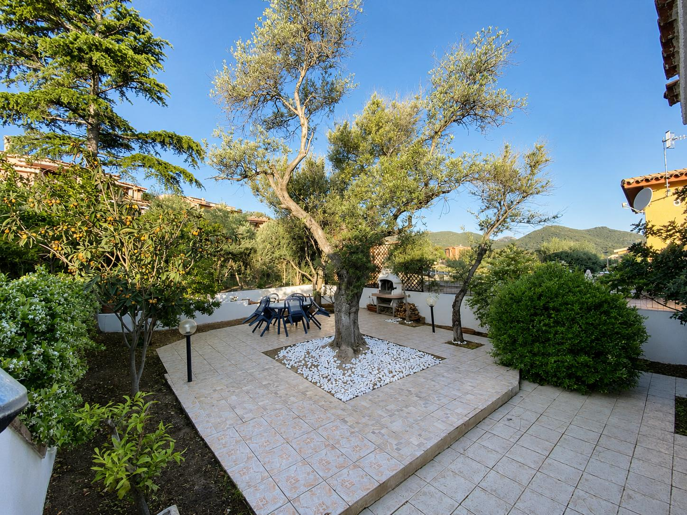

I nostri servizi
Tutto ciò che serve per una vacanza piacevole e rilassante.
Wi-Fi
Connessione Wi-Fi disponibile per gli ospiti.
Cucina attrezzata
Tutto il necessario per sentirsi a casa durante il soggiorno.
Barbecue
Uno spazio ideale per grigliate e cene all'aperto.
Grande giardino
Un ampio spazio verde con amaca per momenti di puro relax.
Terrazza
Terrazza con salottino esterno per rilassarsi all'aria aperta.
Parcheggio
Parcheggio disponibile per gli ospiti.
Aria condizionata
Comfort anche nelle giornate più calde.
Vicino alle spiagge
Una posizione comoda per vivere il mare di San Teodoro.








